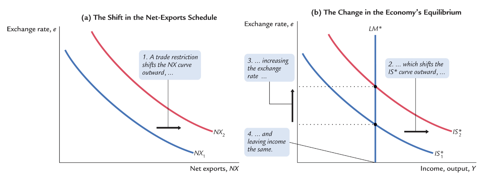
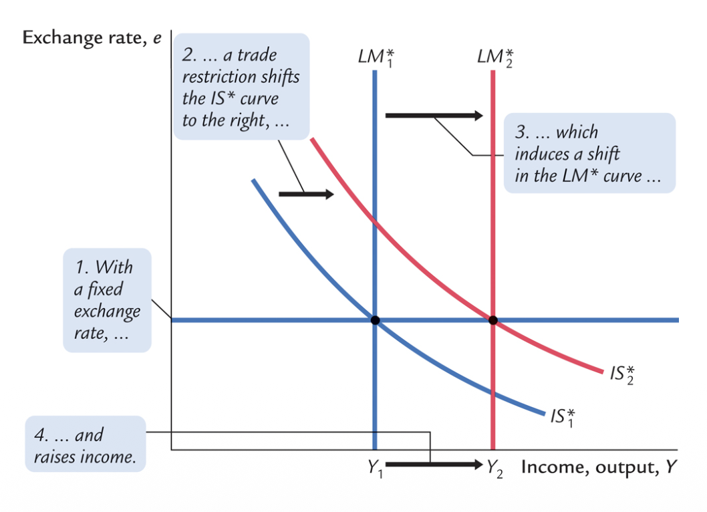
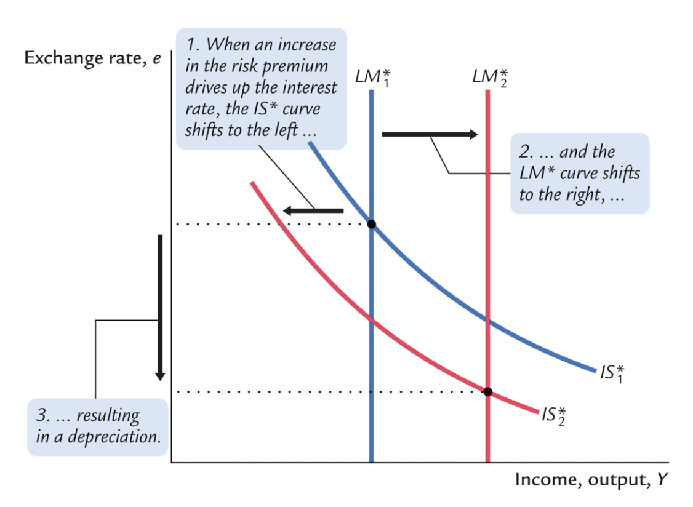

IS-LM-BP & EXTENSIONS
Modelling the Open Economy, Mundell-Fleming, and Parity
The Mundell-Fleming Model
How to Read This Model Today
The Mundell-Fleming / IS-LM-BP framework is a benchmark short-run model of the open economy. It is essentially a pedagogical tool rather than a perfect description of reality. It drastically simplifies reality in order to perfectly isolate the key transmission mechanisms of policy in an open economy.
In modern macroeconomics, central banks don't fix the money supply; the LM curve is instead replaced by an MP curve (Taylor rule). We study it to build crucial economic intuition regarding exchange-rate regimes and the impossible trinity.
The Baseline Assumptions
We begin by exploring the Mundell-Fleming model, effectively assuming a small open economy with flawless capital mobility. Under this setup, the domestic interest rate is anchored to the global rate ($r = r^*$).
IS* Curve (Goods Market)
Where $e$ is the nominal exchange rate. The exchange rate acts as the key adjustment variable in an open economy. When domestic policies change, it is often the exchange rate that moves in order to restore equilibrium.
LM* Curve (Money Market)
Money supply is rigidly fixed by the central bank. Money demand depends entirely on income $Y$ and the fixed global interest rate $r^*$.
Our analysis critically hinges on whether the economy uses a Floating or a Fixed exchange rate regime.
Policies Under Floating Exchange Rates
The Chain Reaction: A fiscal expansion ($G \uparrow$ or $T \downarrow$) increases domestic demand, which initially raises income ($Y \uparrow$). Higher income increases the demand for money, pushing domestic interest rates upward ($r > r^*$). This immediately attracts massive capital inflows from foreign investors seeking higher yields. These sudden capital inflows cause the domestic currency to immediately appreciate ($e \uparrow$), which catastrophically reduces Net Exports ($NX \downarrow$).
The Final Result: This appreciation fully offsets the initial expansion in demand. It perfectly crowds out the fiscal shock. Under perfect capital mobility, fiscal policy is largely ineffective at changing output.

The Chain Reaction: A monetary expansion ($M \uparrow$) suddenly shifts the LM curve to the right, driving the domestic interest rate downward ($r < r^*$). Seeking better returns elsewhere, capital rapidly flows out of the country. These capital outflows cause the domestic currency to heavily depreciate ($e \downarrow$). The cheaper currency drastically boosts Net Exports ($NX \uparrow$).
The Final Result: The rise in net exports violently increases aggregate demand, reinforcing the initial expansion. Therefore, monetary policy is highly effective in raising output. The key intuition here is that expansionary monetary policy does not raise absolute world demand; it merely shifts demand away from foreign products toward domestic products.

The Chain Reaction: A protectionist trade policy (such as tariffs or quotas) artificially reduces imports, structurally improving net exports. This directly shifts the IS curve rightward, raising output and interest rates in the short run. Just like fiscal policy, the higher $r$ instantly attracts massive capital inflows, strongly appreciating the domestic currency. The currency appreciation perfectly kills off the initial gain in net exports.
The Final Result: Under a floating regime, trade policy has absolutely no effect on overall output. In practice, this means that while import restrictions save specific jobs in protected domestic industries, they systematically destroy equivalent jobs in exporting sectors due to the strengthened currency. This merely creates painful frictional unemployment (sectoral shifts).

Fixed Exchange Rates
Under fixed exchange rates, the Central Bank deliberately stands ready to buy or sell the domestic currency for foreign currency at a predetermined, rigid rate. It effectively sacrifices its monetary autonomy to secure the exchange rate.
The Mechanism & Risk
The CB buys or sells using its foreign reserves. A massive vulnerability is the risk of a speculative attack where the CB entirely runs out of reserves. A desperate solution to this is a rigid Currency Board.
Long Run Flexibility
Remember that this system strictly fixes the nominal rate ($e$). In the very long run, as prices ($P$, $P^*$) become fully flexible, the real exchange rate ($\epsilon$) can and will move organically anyway.
Policy Effectiveness under Fixed Rates
Because the exchange rate cannot move to absorb shocks, the money supply ($M$) becomes totally endogenous, constantly adjusting to maintain the exact peg.

Fiscal Expansion
To prevent the currency from appreciating after an IS* rightward shift, the CB prints money (LM* shifts right). Output $Y$ expands heavily. Highly Effective!

Monetary Policy
An attempt to drop rates causes capital flight. To defend the peg from depreciation, the CB must buy back the money (LM* reverts). Totally Ineffective!

Trade Restrictions
IS* shifts right from tariff. To stop the resulting appreciation, the CB prints money (LM* shifts right), permanently locking in higher Output $Y$. Effective!

Risk Differentials and the AD Curve
Until now, we assumed $r = r^*$. But in reality, robust interest rates differ systematically due to imperfect capital mobility, intense transaction costs, or strict capital controls (the "Home Bias").
We modify our global interest rate equation to include a country risk premium: $r = r^* + \theta$.
- $Y = C(Y - T) + I(r^* + \theta) + G + NX(e)$
- $M/P = L(r^* + \theta, Y)$
What really drives the result of an sudden increase in the risk premium ($\theta \uparrow$)? Investors demand more yield to hold domestic assets. Domestic interest rates spike. Capital violently flees the country. The IS* curve shifts left (investment crashes), while LM* shifts right (money demand crashes). The currency immensely depreciates.

Case Study: The 1994 Mexico Peso Crisis
In early 1994, political instability (the Chiapas uprising, assassinations) combined with rising U.S. rates sent Mexico's risk premium ($\theta$) skyrocketing. The Peso faced colossal downward pressure.
Mexico tried to defend its fixed exchange rate by draining its dollar reserves secretly. When markets realized on Dec 20 that the reserves were nearly annihilated, pure panic triggered a capital flight. The fixed rate violently collapsed (depreciating over 40% in weeks).
This creates a trade-off: Fixing an exchange rate grants stability, but leaves you fundamentally defenseless when facing gigantic risk premium shocks and depleted reserves. Interestingly, the crash deeply hurt the US too—Mexican assets owned by Americans lost value, and US border exports collapsed.
Mundell-Fleming and Aggregate Demand: By relaxing the fixed-price assumption, any drop in the general price level ($P \downarrow$) increases real money balances ($M/P \uparrow$), shifting the LM* right. This depreciates the currency and boosts output, neatly derivation the downward-sloping Aggregate Demand (AD) curve from the M-F model.
IS-LM-BP and The Impossible Trinity
For massive economic juggernauts like the US or China, the simple Small Open Economy framework is simply too restrictive. Their capital flows are so immense they manipulate the global interest rate $r^*$.
We combine everything by introducing the Balance of Payments (BP) curve into the core: $NX(e) = CF(r)$.

A fundamental mathematical reality of international macroeconomics: A nation absolutely cannot simultaneously possess free capital flows, an independent monetary policy, and a permanently fixed exchange rate.
Choosing any two automatically implies sacrificing the third.
The Trilemma Triangle
Free Capital Flow
Money cross borders with zero restrictions.
Fixed Exchange Rate
Stable currency value peg.
Independent Monetary
CB sets rates to manage local inflation.
Option 1 (e.g. U.S.): Chooses Capital Flows + Independent Policy $\rightarrow$ Sacrifices Peg (Uses Floating Rates).
Option 2 (e.g. Hong Kong): Chooses Capital Flows + Fixed Peg $\rightarrow$ Sacrifices Independent CB (Must strictly import foreign interest rates).
Option 3 (e.g. China): Chooses Independent Policy + Fixed Peg $\rightarrow$ Sacrifices Free Movement (Must brutally enforce capital controls).
Interest Rate Parity
Interest rate parity inherently reflects the simple idea that investors primarily care about total combined returns, incorporating both raw interest yields and expected currency exchange rate shifts.
It demands sufficient capital mobility and expects assets across borders to be structurally perfect substitutes.
Uncovered Interest Parity (UIP)
The investor takes pure risk by NOT hedging. They gamble on the future exchange rate. The arbitrage rule states expected total returns must identical:
Intuition: If Czech rates are strictly higher, mathematical logic demands investors expect a future massive depreciation of the CZK to offset those gains. Empirically, UIP often drastically fails in the short run due to risk premia.
Covered Interest Parity (CIRP)
The smartest and safest route. The investor fully hedges the future rate risk using a binding forward contract natively on financial markets. No-arbitrage condition:
Intuition: The interest gap instantly mirrors the forward premium perfectly. Under normal peaceful situations, CIRP stubbornly holds flawlessly, only breaking during extreme financial crises when literal funding evaporates.
Key Takeaways
- Mundell-Fleming Policy Framework: A short-run system determining that Fiscal/Trade policy commands power solely under fixed exchange regimes, whereas Monetary policy claims dominance heavily in floating environments.
- The Impossible Trinity: A systemic trilemma forcing nations to irrevocably surrender one piece of sovereignty: you cannot unite fixed rates, infinite capital movement, and sovereign monetary policy.
- Interest Rate Parity: Establishes that real yields across frontiers equate structurally when factoring in direct foreign exchange speculations (UIP) or heavily contracted futures (CIRP).
End of Lecture — IS-LM-BP. Utilizing B2 English level pedagogy.